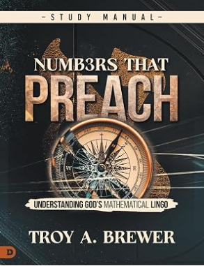
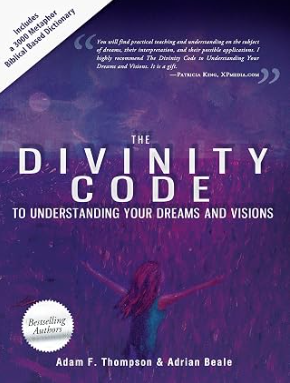
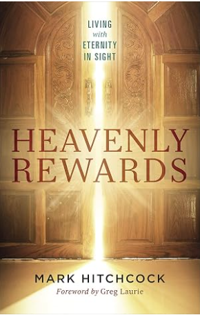
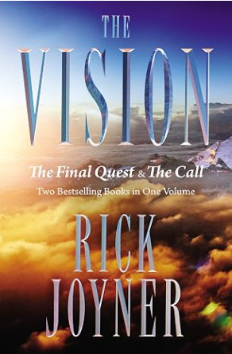
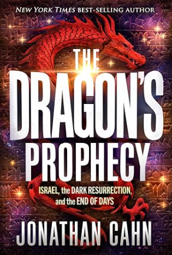

My Faith Book Collection
This is my curated collection of books that have shaped my thinking, strengthened my faith and inspired me in different seasons of life. Each book here carries personal meaning whether through spiritual insight, prophetic themes, biblical numerology or powerful storytelling. This collection also demonstrates how responsive design allows content to adapt beautifully across all screen sizes.
The Hidden Man
E.W. Kenyon • Christian Living • 1970
This book deepened my understanding of the spiritual life and the inner man. Kenyon’s teaching helped me see how faith shapes identity and how spiritual growth transforms everyday living.

Numbers That Preach
Troy A. Brewer • Biblical Numerology • 2011
Brewer’s insights into biblical numbers opened my eyes to patterns and meanings woven throughout Scripture. This book made me appreciate how intentional and symbolic God’s design truly is.

The Divinity Code
Adam Thompson & Adrian Beale • Dreams & Visions • 2011
This book helped me understand how God can speak through dreams and symbolic imagery. It gave me practical tools for interpretation and strengthened my awareness of spiritual communication.

Heavenly Rewards
Mark Hitchcock & Greg Laurie • Christian Theology • 2019
This book encouraged me to think more deeply about eternal perspective. Hitchcock and Laurie explain how our choices today echo into eternity, and that reminder has shaped how I approach faith and purpose.

The Vision
Rick Joyner • Prophetic Insight • 1996
Joyner’s prophetic writing challenged me to reflect on spiritual warfare, discernment and the direction of the church. It’s a book that stays with you long after you finish reading.

The Dragon Prophecy
Jonathan Cahn • Prophecy & Mystery • 2024
Cahn’s storytelling blends biblical prophecy with modern events in a way that feels urgent and compelling. This book strengthened my interest in prophetic themes and spiritual symbolism.